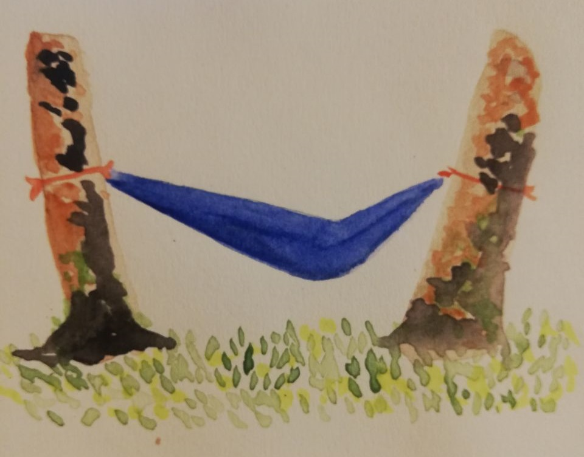
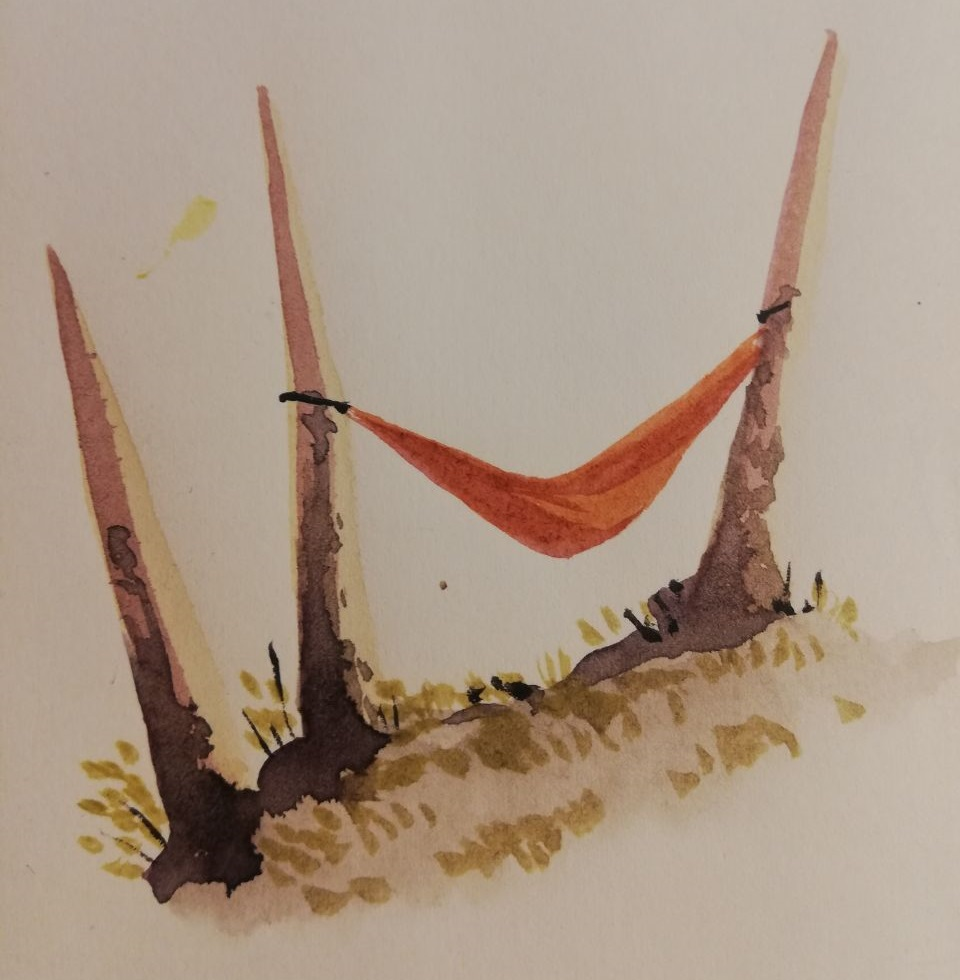
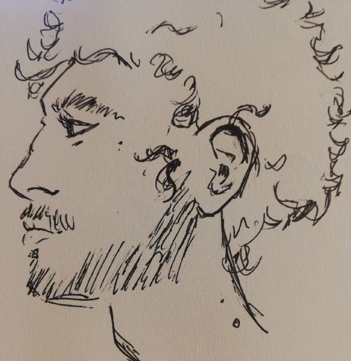
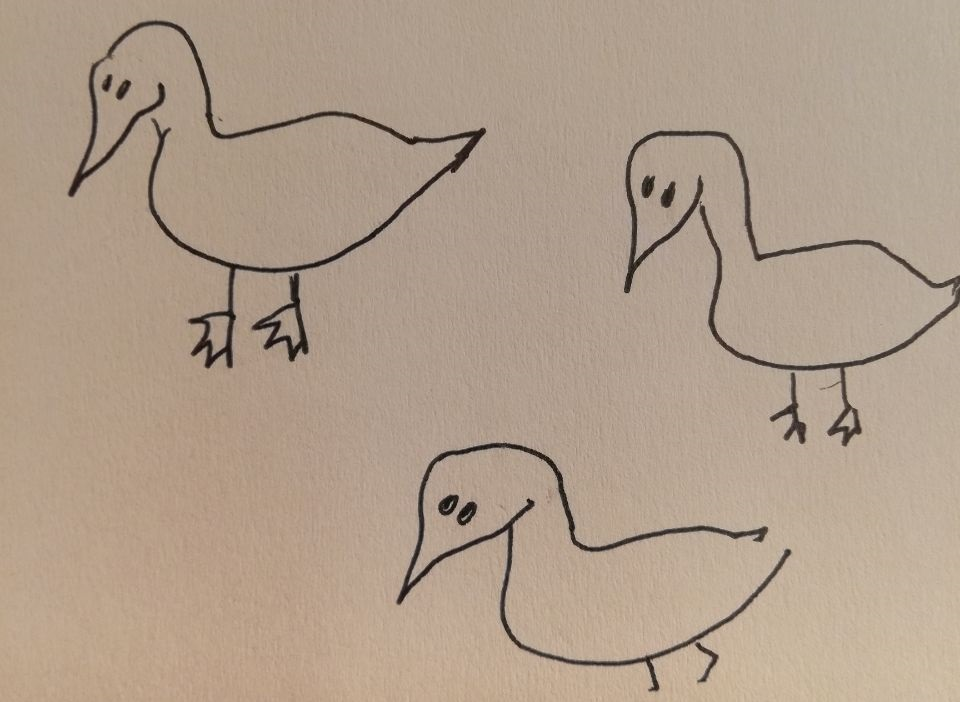
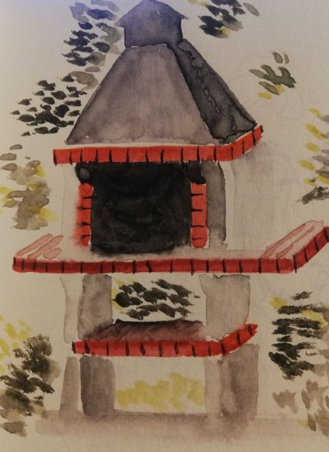
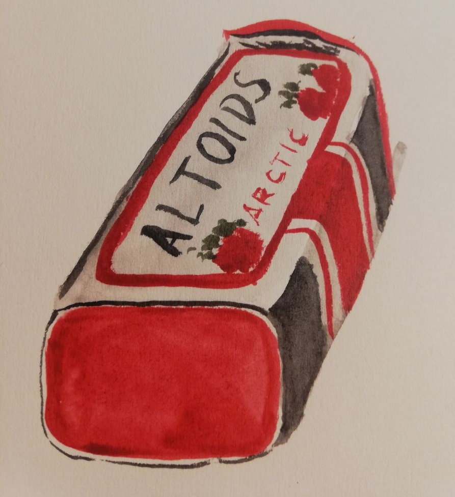
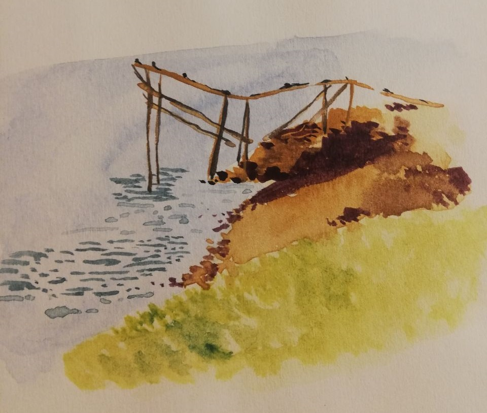
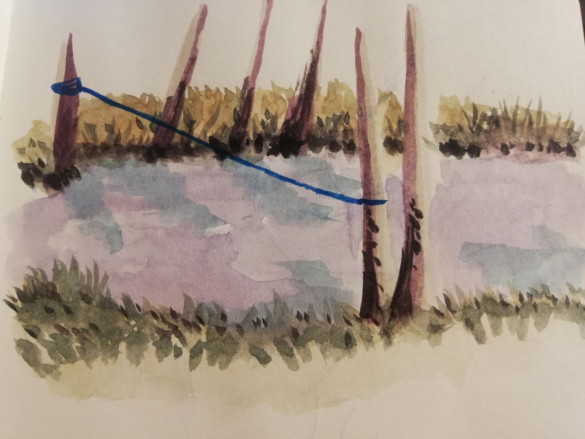
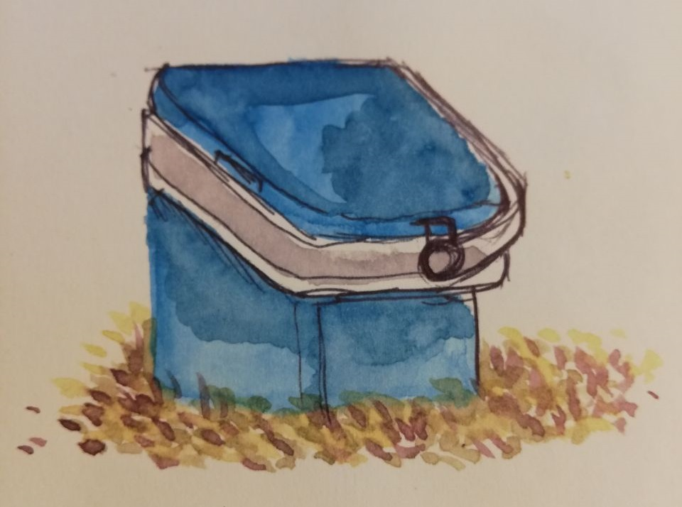

hammock nr 1 at Paredes de Coura 08.2024

hammock nr 2 at Paredes de Coura 08.2023 (every year the hammocks change)

i got my partner to stand still 08.2024

ducks ??.2024

oven at Astúrias 04.2024

bostonian altoids 04.2024

dangerous thing (???) at Ferreira do Zêzere 08.2024

another dangerous thing at Paredes de Coura 08.2024

keeps things cold 08.2023